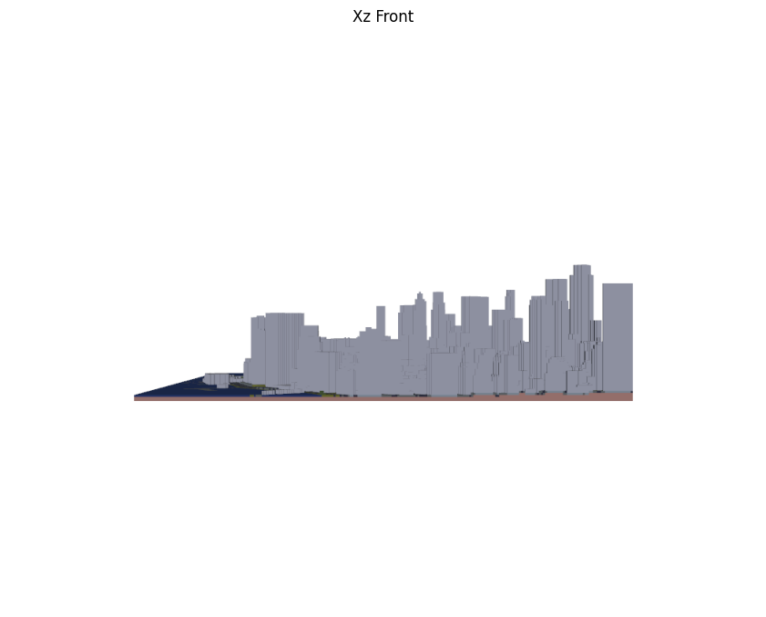
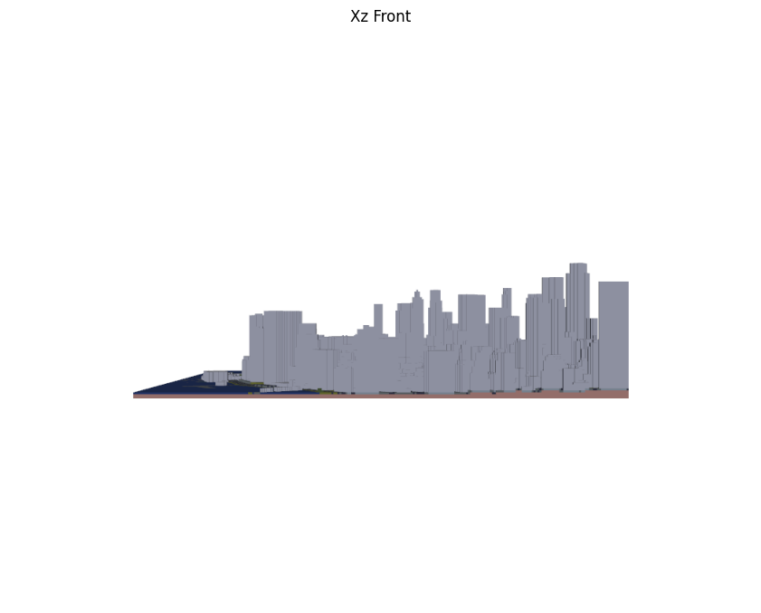

VoxCity Demo¶
You can easily learn how the Python package “VoxCity” works by following this demo.
Please execute cells from Step 1 to Step 5 by clicking the ▶️ icons.
It is important to note that you need to choose either Option 1 or Option 2 in Step 2 and execute only one.
Step1. Prepare environment¶
#@title 1.1. Install voxcity
!pip install voxcity
!apt-get update
!apt-get install -y xvfb libgl1-mesa-glx
Collecting voxcity
Downloading voxcity-0.4.5-py3-none-any.whl.metadata (25 kB)
Requirement already satisfied: typer in /usr/local/lib/python3.11/dist-packages (from voxcity) (0.15.2)
Requirement already satisfied: pandas in /usr/local/lib/python3.11/dist-packages (from voxcity) (2.2.2)
Requirement already satisfied: requests in /usr/local/lib/python3.11/dist-packages (from voxcity) (2.32.3)
Requirement already satisfied: pyproj in /usr/local/lib/python3.11/dist-packages (from voxcity) (3.7.1)
Requirement already satisfied: ipyleaflet in /usr/local/lib/python3.11/dist-packages (from voxcity) (0.19.2)
Requirement already satisfied: geopandas in /usr/local/lib/python3.11/dist-packages (from voxcity) (1.0.1)
Collecting rasterio==1.3.11 (from voxcity)
Downloading rasterio-1.3.11-cp311-cp311-manylinux_2_17_x86_64.manylinux2014_x86_64.whl.metadata (14 kB)
Requirement already satisfied: shapely in /usr/local/lib/python3.11/dist-packages (from voxcity) (2.0.7)
Requirement already satisfied: gdown in /usr/local/lib/python3.11/dist-packages (from voxcity) (5.2.0)
Requirement already satisfied: numpy in /usr/local/lib/python3.11/dist-packages (from voxcity) (1.26.4)
Requirement already satisfied: matplotlib in /usr/local/lib/python3.11/dist-packages (from voxcity) (3.10.0)
Collecting contextily (from voxcity)
Downloading contextily-1.6.2-py3-none-any.whl.metadata (2.9 kB)
Collecting fiona (from voxcity)
Downloading fiona-1.10.1-cp311-cp311-manylinux_2_17_x86_64.manylinux2014_x86_64.whl.metadata (56 kB)
━━━━━━━━━━━━━━━━━━━━━━━━━━━━━━━━━━━━━━━━ 56.6/56.6 kB 332.1 kB/s eta 0:00:00
?25hCollecting rtree (from voxcity)
Downloading rtree-1.4.0-py3-none-manylinux2014_x86_64.manylinux_2_17_x86_64.whl.metadata (2.1 kB)
Requirement already satisfied: plotly in /usr/local/lib/python3.11/dist-packages (from voxcity) (5.24.1)
Requirement already satisfied: tqdm in /usr/local/lib/python3.11/dist-packages (from voxcity) (4.67.1)
Requirement already satisfied: scipy in /usr/local/lib/python3.11/dist-packages (from voxcity) (1.13.1)
Collecting affine (from voxcity)
Downloading affine-2.4.0-py3-none-any.whl.metadata (4.0 kB)
Requirement already satisfied: earthengine-api in /usr/local/lib/python3.11/dist-packages (from voxcity) (1.5.5)
Requirement already satisfied: geemap in /usr/local/lib/python3.11/dist-packages (from voxcity) (0.35.3)
Collecting rio-cogeo (from voxcity)
Downloading rio_cogeo-5.4.1-py3-none-any.whl.metadata (4.7 kB)
Requirement already satisfied: geopy in /usr/local/lib/python3.11/dist-packages (from voxcity) (2.4.1)
Collecting py-vox-io (from voxcity)
Downloading py-vox-io-0.1.tar.gz (4.8 kB)
Preparing metadata (setup.py) ... ?25l?25hdone
Collecting mapbox_vector_tile (from voxcity)
Downloading mapbox_vector_tile-2.1.0-py3-none-any.whl.metadata (16 kB)
Requirement already satisfied: numba in /usr/local/lib/python3.11/dist-packages (from voxcity) (0.60.0)
Collecting reverse_geocoder (from voxcity)
Downloading reverse_geocoder-1.5.1.tar.gz (2.2 MB)
━━━━━━━━━━━━━━━━━━━━━━━━━━━━━━━━━━━━━━━━ 2.2/2.2 MB 2.4 MB/s eta 0:00:00
?25h Preparing metadata (setup.py) ... ?25l?25hdone
Collecting pycountry (from voxcity)
Downloading pycountry-24.6.1-py3-none-any.whl.metadata (12 kB)
Collecting osm2geojson (from voxcity)
Downloading osm2geojson-0.2.5.tar.gz (14 kB)
Preparing metadata (setup.py) ... ?25l?25hdone
Requirement already satisfied: seaborn in /usr/local/lib/python3.11/dist-packages (from voxcity) (0.13.2)
Collecting overturemaps (from voxcity)
Downloading overturemaps-0.12.0-py3-none-any.whl.metadata (3.9 kB)
Collecting protobuf<=3.20.3 (from voxcity)
Downloading protobuf-3.20.3-py2.py3-none-any.whl.metadata (720 bytes)
Collecting timezonefinder (from voxcity)
Downloading timezonefinder-6.5.8-cp311-cp311-manylinux_2_17_x86_64.manylinux_2_5_x86_64.manylinux1_x86_64.manylinux2014_x86_64.whl.metadata (4.1 kB)
Collecting astral (from voxcity)
Downloading astral-3.2-py3-none-any.whl.metadata (1.7 kB)
Collecting osmnx (from voxcity)
Downloading osmnx-2.0.1-py3-none-any.whl.metadata (4.9 kB)
Requirement already satisfied: joblib in /usr/local/lib/python3.11/dist-packages (from voxcity) (1.4.2)
Collecting trimesh (from voxcity)
Downloading trimesh-4.6.4-py3-none-any.whl.metadata (18 kB)
Collecting pyvista (from voxcity)
Downloading pyvista-0.44.2-py3-none-any.whl.metadata (15 kB)
Requirement already satisfied: IPython in /usr/local/lib/python3.11/dist-packages (from voxcity) (7.34.0)
Requirement already satisfied: attrs in /usr/local/lib/python3.11/dist-packages (from rasterio==1.3.11->voxcity) (25.1.0)
Requirement already satisfied: certifi in /usr/local/lib/python3.11/dist-packages (from rasterio==1.3.11->voxcity) (2025.1.31)
Requirement already satisfied: click>=4.0 in /usr/local/lib/python3.11/dist-packages (from rasterio==1.3.11->voxcity) (8.1.8)
Collecting cligj>=0.5 (from rasterio==1.3.11->voxcity)
Downloading cligj-0.7.2-py3-none-any.whl.metadata (5.0 kB)
Collecting snuggs>=1.4.1 (from rasterio==1.3.11->voxcity)
Downloading snuggs-1.4.7-py3-none-any.whl.metadata (3.4 kB)
Collecting click-plugins (from rasterio==1.3.11->voxcity)
Downloading click_plugins-1.1.1-py2.py3-none-any.whl.metadata (6.4 kB)
Requirement already satisfied: setuptools in /usr/local/lib/python3.11/dist-packages (from rasterio==1.3.11->voxcity) (75.1.0)
Collecting mercantile (from contextily->voxcity)
Downloading mercantile-1.2.1-py3-none-any.whl.metadata (4.8 kB)
Requirement already satisfied: pillow in /usr/local/lib/python3.11/dist-packages (from contextily->voxcity) (11.1.0)
Requirement already satisfied: xyzservices in /usr/local/lib/python3.11/dist-packages (from contextily->voxcity) (2025.1.0)
Requirement already satisfied: google-cloud-storage in /usr/local/lib/python3.11/dist-packages (from earthengine-api->voxcity) (2.19.0)
Requirement already satisfied: google-api-python-client>=1.12.1 in /usr/local/lib/python3.11/dist-packages (from earthengine-api->voxcity) (2.160.0)
Requirement already satisfied: google-auth>=1.4.1 in /usr/local/lib/python3.11/dist-packages (from earthengine-api->voxcity) (2.38.0)
Requirement already satisfied: google-auth-httplib2>=0.0.3 in /usr/local/lib/python3.11/dist-packages (from earthengine-api->voxcity) (0.2.0)
Requirement already satisfied: httplib2<1dev,>=0.9.2 in /usr/local/lib/python3.11/dist-packages (from earthengine-api->voxcity) (0.22.0)
Requirement already satisfied: beautifulsoup4 in /usr/local/lib/python3.11/dist-packages (from gdown->voxcity) (4.13.3)
Requirement already satisfied: filelock in /usr/local/lib/python3.11/dist-packages (from gdown->voxcity) (3.17.0)
Requirement already satisfied: bqplot in /usr/local/lib/python3.11/dist-packages (from geemap->voxcity) (0.12.44)
Requirement already satisfied: colour in /usr/local/lib/python3.11/dist-packages (from geemap->voxcity) (0.1.5)
Requirement already satisfied: eerepr>=0.1.0 in /usr/local/lib/python3.11/dist-packages (from geemap->voxcity) (0.1.1)
Requirement already satisfied: folium>=0.17.0 in /usr/local/lib/python3.11/dist-packages (from geemap->voxcity) (0.19.5)
Requirement already satisfied: geocoder in /usr/local/lib/python3.11/dist-packages (from geemap->voxcity) (1.38.1)
Requirement already satisfied: ipyevents in /usr/local/lib/python3.11/dist-packages (from geemap->voxcity) (2.0.2)
Requirement already satisfied: ipyfilechooser>=0.6.0 in /usr/local/lib/python3.11/dist-packages (from geemap->voxcity) (0.6.0)
Requirement already satisfied: ipytree in /usr/local/lib/python3.11/dist-packages (from geemap->voxcity) (0.2.2)
Requirement already satisfied: pyperclip in /usr/local/lib/python3.11/dist-packages (from geemap->voxcity) (1.9.0)
Requirement already satisfied: pyshp>=2.3.1 in /usr/local/lib/python3.11/dist-packages (from geemap->voxcity) (2.3.1)
Requirement already satisfied: python-box in /usr/local/lib/python3.11/dist-packages (from geemap->voxcity) (7.3.2)
Requirement already satisfied: scooby in /usr/local/lib/python3.11/dist-packages (from geemap->voxcity) (0.10.0)
Requirement already satisfied: branca>=0.5.0 in /usr/local/lib/python3.11/dist-packages (from ipyleaflet->voxcity) (0.8.1)
Requirement already satisfied: ipywidgets<9,>=7.6.0 in /usr/local/lib/python3.11/dist-packages (from ipyleaflet->voxcity) (7.7.1)
Requirement already satisfied: jupyter-leaflet<0.20,>=0.19 in /usr/local/lib/python3.11/dist-packages (from ipyleaflet->voxcity) (0.19.2)
Requirement already satisfied: traittypes<3,>=0.2.1 in /usr/local/lib/python3.11/dist-packages (from ipyleaflet->voxcity) (0.2.1)
Requirement already satisfied: pyogrio>=0.7.2 in /usr/local/lib/python3.11/dist-packages (from geopandas->voxcity) (0.10.0)
Requirement already satisfied: packaging in /usr/local/lib/python3.11/dist-packages (from geopandas->voxcity) (24.2)
Requirement already satisfied: python-dateutil>=2.8.2 in /usr/local/lib/python3.11/dist-packages (from pandas->voxcity) (2.8.2)
Requirement already satisfied: pytz>=2020.1 in /usr/local/lib/python3.11/dist-packages (from pandas->voxcity) (2025.1)
Requirement already satisfied: tzdata>=2022.7 in /usr/local/lib/python3.11/dist-packages (from pandas->voxcity) (2025.1)
Requirement already satisfied: geographiclib<3,>=1.52 in /usr/local/lib/python3.11/dist-packages (from geopy->voxcity) (2.0)
Collecting jedi>=0.16 (from IPython->voxcity)
Downloading jedi-0.19.2-py2.py3-none-any.whl.metadata (22 kB)
Requirement already satisfied: decorator in /usr/local/lib/python3.11/dist-packages (from IPython->voxcity) (4.4.2)
Requirement already satisfied: pickleshare in /usr/local/lib/python3.11/dist-packages (from IPython->voxcity) (0.7.5)
Requirement already satisfied: traitlets>=4.2 in /usr/local/lib/python3.11/dist-packages (from IPython->voxcity) (5.7.1)
Requirement already satisfied: prompt-toolkit!=3.0.0,!=3.0.1,<3.1.0,>=2.0.0 in /usr/local/lib/python3.11/dist-packages (from IPython->voxcity) (3.0.50)
Requirement already satisfied: pygments in /usr/local/lib/python3.11/dist-packages (from IPython->voxcity) (2.18.0)
Requirement already satisfied: backcall in /usr/local/lib/python3.11/dist-packages (from IPython->voxcity) (0.2.0)
Requirement already satisfied: matplotlib-inline in /usr/local/lib/python3.11/dist-packages (from IPython->voxcity) (0.1.7)
Requirement already satisfied: pexpect>4.3 in /usr/local/lib/python3.11/dist-packages (from IPython->voxcity) (4.9.0)
INFO: pip is looking at multiple versions of mapbox-vector-tile to determine which version is compatible with other requirements. This could take a while.
Collecting mapbox_vector_tile (from voxcity)
Downloading mapbox_vector_tile-2.0.1-py3-none-any.whl.metadata (16 kB)
Downloading mapbox_vector_tile-2.0.0-py3-none-any.whl.metadata (16 kB)
Downloading mapbox-vector-tile-1.2.1.tar.gz (33 kB)
Preparing metadata (setup.py) ... ?25l?25hdone
Requirement already satisfied: future in /usr/local/lib/python3.11/dist-packages (from mapbox_vector_tile->voxcity) (1.0.0)
Collecting pyclipper (from mapbox_vector_tile->voxcity)
Downloading pyclipper-1.3.0.post6-cp311-cp311-manylinux_2_17_x86_64.manylinux2014_x86_64.whl.metadata (9.0 kB)
Requirement already satisfied: contourpy>=1.0.1 in /usr/local/lib/python3.11/dist-packages (from matplotlib->voxcity) (1.3.1)
Requirement already satisfied: cycler>=0.10 in /usr/local/lib/python3.11/dist-packages (from matplotlib->voxcity) (0.12.1)
Requirement already satisfied: fonttools>=4.22.0 in /usr/local/lib/python3.11/dist-packages (from matplotlib->voxcity) (4.56.0)
Requirement already satisfied: kiwisolver>=1.3.1 in /usr/local/lib/python3.11/dist-packages (from matplotlib->voxcity) (1.4.8)
Requirement already satisfied: pyparsing>=2.3.1 in /usr/local/lib/python3.11/dist-packages (from matplotlib->voxcity) (3.2.1)
Requirement already satisfied: llvmlite<0.44,>=0.43.0dev0 in /usr/local/lib/python3.11/dist-packages (from numba->voxcity) (0.43.0)
Requirement already satisfied: networkx>=2.5 in /usr/local/lib/python3.11/dist-packages (from osmnx->voxcity) (3.4.2)
Requirement already satisfied: charset-normalizer<4,>=2 in /usr/local/lib/python3.11/dist-packages (from requests->voxcity) (3.4.1)
Requirement already satisfied: idna<4,>=2.5 in /usr/local/lib/python3.11/dist-packages (from requests->voxcity) (3.10)
Requirement already satisfied: urllib3<3,>=1.21.1 in /usr/local/lib/python3.11/dist-packages (from requests->voxcity) (2.3.0)
Requirement already satisfied: pyarrow>=15.0.2 in /usr/local/lib/python3.11/dist-packages (from overturemaps->voxcity) (18.1.0)
Requirement already satisfied: tenacity>=6.2.0 in /usr/local/lib/python3.11/dist-packages (from plotly->voxcity) (9.0.0)
Requirement already satisfied: pooch in /usr/local/lib/python3.11/dist-packages (from pyvista->voxcity) (1.8.2)
Collecting vtk<9.4.0 (from pyvista->voxcity)
Downloading vtk-9.3.1-cp311-cp311-manylinux_2_17_x86_64.manylinux2014_x86_64.whl.metadata (5.2 kB)
Requirement already satisfied: typing-extensions in /usr/local/lib/python3.11/dist-packages (from pyvista->voxcity) (4.12.2)
Collecting morecantile<7.0,>=5.0 (from rio-cogeo->voxcity)
Downloading morecantile-6.2.0-py3-none-any.whl.metadata (7.3 kB)
Requirement already satisfied: pydantic~=2.0 in /usr/local/lib/python3.11/dist-packages (from rio-cogeo->voxcity) (2.10.6)
Requirement already satisfied: cffi<2,>=1.15.1 in /usr/local/lib/python3.11/dist-packages (from timezonefinder->voxcity) (1.17.1)
Collecting h3>4 (from timezonefinder->voxcity)
Downloading h3-4.2.2-cp311-cp311-manylinux_2_17_x86_64.manylinux2014_x86_64.whl.metadata (18 kB)
Requirement already satisfied: shellingham>=1.3.0 in /usr/local/lib/python3.11/dist-packages (from typer->voxcity) (1.5.4)
Requirement already satisfied: rich>=10.11.0 in /usr/local/lib/python3.11/dist-packages (from typer->voxcity) (13.9.4)
Requirement already satisfied: jinja2>=3 in /usr/local/lib/python3.11/dist-packages (from branca>=0.5.0->ipyleaflet->voxcity) (3.1.6)
Requirement already satisfied: pycparser in /usr/local/lib/python3.11/dist-packages (from cffi<2,>=1.15.1->timezonefinder->voxcity) (2.22)
Requirement already satisfied: google-api-core!=2.0.*,!=2.1.*,!=2.2.*,!=2.3.0,<3.0.0.dev0,>=1.31.5 in /usr/local/lib/python3.11/dist-packages (from google-api-python-client>=1.12.1->earthengine-api->voxcity) (2.24.1)
Requirement already satisfied: uritemplate<5,>=3.0.1 in /usr/local/lib/python3.11/dist-packages (from google-api-python-client>=1.12.1->earthengine-api->voxcity) (4.1.1)
Requirement already satisfied: cachetools<6.0,>=2.0.0 in /usr/local/lib/python3.11/dist-packages (from google-auth>=1.4.1->earthengine-api->voxcity) (5.5.2)
Requirement already satisfied: pyasn1-modules>=0.2.1 in /usr/local/lib/python3.11/dist-packages (from google-auth>=1.4.1->earthengine-api->voxcity) (0.4.1)
Requirement already satisfied: rsa<5,>=3.1.4 in /usr/local/lib/python3.11/dist-packages (from google-auth>=1.4.1->earthengine-api->voxcity) (4.9)
Requirement already satisfied: ipykernel>=4.5.1 in /usr/local/lib/python3.11/dist-packages (from ipywidgets<9,>=7.6.0->ipyleaflet->voxcity) (6.17.1)
Requirement already satisfied: ipython-genutils~=0.2.0 in /usr/local/lib/python3.11/dist-packages (from ipywidgets<9,>=7.6.0->ipyleaflet->voxcity) (0.2.0)
Requirement already satisfied: widgetsnbextension~=3.6.0 in /usr/local/lib/python3.11/dist-packages (from ipywidgets<9,>=7.6.0->ipyleaflet->voxcity) (3.6.10)
Requirement already satisfied: jupyterlab-widgets>=1.0.0 in /usr/local/lib/python3.11/dist-packages (from ipywidgets<9,>=7.6.0->ipyleaflet->voxcity) (3.0.13)
Requirement already satisfied: parso<0.9.0,>=0.8.4 in /usr/local/lib/python3.11/dist-packages (from jedi>=0.16->IPython->voxcity) (0.8.4)
Requirement already satisfied: ptyprocess>=0.5 in /usr/local/lib/python3.11/dist-packages (from pexpect>4.3->IPython->voxcity) (0.7.0)
Requirement already satisfied: wcwidth in /usr/local/lib/python3.11/dist-packages (from prompt-toolkit!=3.0.0,!=3.0.1,<3.1.0,>=2.0.0->IPython->voxcity) (0.2.13)
Requirement already satisfied: annotated-types>=0.6.0 in /usr/local/lib/python3.11/dist-packages (from pydantic~=2.0->rio-cogeo->voxcity) (0.7.0)
Requirement already satisfied: pydantic-core==2.27.2 in /usr/local/lib/python3.11/dist-packages (from pydantic~=2.0->rio-cogeo->voxcity) (2.27.2)
Requirement already satisfied: six>=1.5 in /usr/local/lib/python3.11/dist-packages (from python-dateutil>=2.8.2->pandas->voxcity) (1.17.0)
Requirement already satisfied: markdown-it-py>=2.2.0 in /usr/local/lib/python3.11/dist-packages (from rich>=10.11.0->typer->voxcity) (3.0.0)
Requirement already satisfied: soupsieve>1.2 in /usr/local/lib/python3.11/dist-packages (from beautifulsoup4->gdown->voxcity) (2.6)
Requirement already satisfied: ratelim in /usr/local/lib/python3.11/dist-packages (from geocoder->geemap->voxcity) (0.1.6)
Requirement already satisfied: google-cloud-core<3.0dev,>=2.3.0 in /usr/local/lib/python3.11/dist-packages (from google-cloud-storage->earthengine-api->voxcity) (2.4.2)
Requirement already satisfied: google-resumable-media>=2.7.2 in /usr/local/lib/python3.11/dist-packages (from google-cloud-storage->earthengine-api->voxcity) (2.7.2)
Requirement already satisfied: google-crc32c<2.0dev,>=1.0 in /usr/local/lib/python3.11/dist-packages (from google-cloud-storage->earthengine-api->voxcity) (1.6.0)
Requirement already satisfied: platformdirs>=2.5.0 in /usr/local/lib/python3.11/dist-packages (from pooch->pyvista->voxcity) (4.3.6)
Requirement already satisfied: PySocks!=1.5.7,>=1.5.6 in /usr/local/lib/python3.11/dist-packages (from requests[socks]->gdown->voxcity) (1.7.1)
Requirement already satisfied: googleapis-common-protos<2.0.dev0,>=1.56.2 in /usr/local/lib/python3.11/dist-packages (from google-api-core!=2.0.*,!=2.1.*,!=2.2.*,!=2.3.0,<3.0.0.dev0,>=1.31.5->google-api-python-client>=1.12.1->earthengine-api->voxcity) (1.69.0)
Requirement already satisfied: proto-plus<2.0.0dev,>=1.22.3 in /usr/local/lib/python3.11/dist-packages (from google-api-core!=2.0.*,!=2.1.*,!=2.2.*,!=2.3.0,<3.0.0.dev0,>=1.31.5->google-api-python-client>=1.12.1->earthengine-api->voxcity) (1.26.0)
Requirement already satisfied: debugpy>=1.0 in /usr/local/lib/python3.11/dist-packages (from ipykernel>=4.5.1->ipywidgets<9,>=7.6.0->ipyleaflet->voxcity) (1.8.0)
Requirement already satisfied: jupyter-client>=6.1.12 in /usr/local/lib/python3.11/dist-packages (from ipykernel>=4.5.1->ipywidgets<9,>=7.6.0->ipyleaflet->voxcity) (6.1.12)
Requirement already satisfied: nest-asyncio in /usr/local/lib/python3.11/dist-packages (from ipykernel>=4.5.1->ipywidgets<9,>=7.6.0->ipyleaflet->voxcity) (1.6.0)
Requirement already satisfied: psutil in /usr/local/lib/python3.11/dist-packages (from ipykernel>=4.5.1->ipywidgets<9,>=7.6.0->ipyleaflet->voxcity) (5.9.5)
Requirement already satisfied: pyzmq>=17 in /usr/local/lib/python3.11/dist-packages (from ipykernel>=4.5.1->ipywidgets<9,>=7.6.0->ipyleaflet->voxcity) (24.0.1)
Requirement already satisfied: tornado>=6.1 in /usr/local/lib/python3.11/dist-packages (from ipykernel>=4.5.1->ipywidgets<9,>=7.6.0->ipyleaflet->voxcity) (6.4.2)
Requirement already satisfied: MarkupSafe>=2.0 in /usr/local/lib/python3.11/dist-packages (from jinja2>=3->branca>=0.5.0->ipyleaflet->voxcity) (3.0.2)
Requirement already satisfied: mdurl~=0.1 in /usr/local/lib/python3.11/dist-packages (from markdown-it-py>=2.2.0->rich>=10.11.0->typer->voxcity) (0.1.2)
Requirement already satisfied: pyasn1<0.7.0,>=0.4.6 in /usr/local/lib/python3.11/dist-packages (from pyasn1-modules>=0.2.1->google-auth>=1.4.1->earthengine-api->voxcity) (0.6.1)
Requirement already satisfied: notebook>=4.4.1 in /usr/local/lib/python3.11/dist-packages (from widgetsnbextension~=3.6.0->ipywidgets<9,>=7.6.0->ipyleaflet->voxcity) (6.5.5)
Requirement already satisfied: jupyter-core>=4.6.0 in /usr/local/lib/python3.11/dist-packages (from jupyter-client>=6.1.12->ipykernel>=4.5.1->ipywidgets<9,>=7.6.0->ipyleaflet->voxcity) (5.7.2)
Requirement already satisfied: argon2-cffi in /usr/local/lib/python3.11/dist-packages (from notebook>=4.4.1->widgetsnbextension~=3.6.0->ipywidgets<9,>=7.6.0->ipyleaflet->voxcity) (23.1.0)
Requirement already satisfied: nbformat in /usr/local/lib/python3.11/dist-packages (from notebook>=4.4.1->widgetsnbextension~=3.6.0->ipywidgets<9,>=7.6.0->ipyleaflet->voxcity) (5.10.4)
Requirement already satisfied: nbconvert>=5 in /usr/local/lib/python3.11/dist-packages (from notebook>=4.4.1->widgetsnbextension~=3.6.0->ipywidgets<9,>=7.6.0->ipyleaflet->voxcity) (7.16.6)
Requirement already satisfied: Send2Trash>=1.8.0 in /usr/local/lib/python3.11/dist-packages (from notebook>=4.4.1->widgetsnbextension~=3.6.0->ipywidgets<9,>=7.6.0->ipyleaflet->voxcity) (1.8.3)
Requirement already satisfied: terminado>=0.8.3 in /usr/local/lib/python3.11/dist-packages (from notebook>=4.4.1->widgetsnbextension~=3.6.0->ipywidgets<9,>=7.6.0->ipyleaflet->voxcity) (0.18.1)
Requirement already satisfied: prometheus-client in /usr/local/lib/python3.11/dist-packages (from notebook>=4.4.1->widgetsnbextension~=3.6.0->ipywidgets<9,>=7.6.0->ipyleaflet->voxcity) (0.21.1)
Requirement already satisfied: nbclassic>=0.4.7 in /usr/local/lib/python3.11/dist-packages (from notebook>=4.4.1->widgetsnbextension~=3.6.0->ipywidgets<9,>=7.6.0->ipyleaflet->voxcity) (1.2.0)
Requirement already satisfied: notebook-shim>=0.2.3 in /usr/local/lib/python3.11/dist-packages (from nbclassic>=0.4.7->notebook>=4.4.1->widgetsnbextension~=3.6.0->ipywidgets<9,>=7.6.0->ipyleaflet->voxcity) (0.2.4)
Requirement already satisfied: bleach!=5.0.0 in /usr/local/lib/python3.11/dist-packages (from bleach[css]!=5.0.0->nbconvert>=5->notebook>=4.4.1->widgetsnbextension~=3.6.0->ipywidgets<9,>=7.6.0->ipyleaflet->voxcity) (6.2.0)
Requirement already satisfied: defusedxml in /usr/local/lib/python3.11/dist-packages (from nbconvert>=5->notebook>=4.4.1->widgetsnbextension~=3.6.0->ipywidgets<9,>=7.6.0->ipyleaflet->voxcity) (0.7.1)
Requirement already satisfied: jupyterlab-pygments in /usr/local/lib/python3.11/dist-packages (from nbconvert>=5->notebook>=4.4.1->widgetsnbextension~=3.6.0->ipywidgets<9,>=7.6.0->ipyleaflet->voxcity) (0.3.0)
Requirement already satisfied: mistune<4,>=2.0.3 in /usr/local/lib/python3.11/dist-packages (from nbconvert>=5->notebook>=4.4.1->widgetsnbextension~=3.6.0->ipywidgets<9,>=7.6.0->ipyleaflet->voxcity) (3.1.2)
Requirement already satisfied: nbclient>=0.5.0 in /usr/local/lib/python3.11/dist-packages (from nbconvert>=5->notebook>=4.4.1->widgetsnbextension~=3.6.0->ipywidgets<9,>=7.6.0->ipyleaflet->voxcity) (0.10.2)
Requirement already satisfied: pandocfilters>=1.4.1 in /usr/local/lib/python3.11/dist-packages (from nbconvert>=5->notebook>=4.4.1->widgetsnbextension~=3.6.0->ipywidgets<9,>=7.6.0->ipyleaflet->voxcity) (1.5.1)
Requirement already satisfied: fastjsonschema>=2.15 in /usr/local/lib/python3.11/dist-packages (from nbformat->notebook>=4.4.1->widgetsnbextension~=3.6.0->ipywidgets<9,>=7.6.0->ipyleaflet->voxcity) (2.21.1)
Requirement already satisfied: jsonschema>=2.6 in /usr/local/lib/python3.11/dist-packages (from nbformat->notebook>=4.4.1->widgetsnbextension~=3.6.0->ipywidgets<9,>=7.6.0->ipyleaflet->voxcity) (4.23.0)
Requirement already satisfied: argon2-cffi-bindings in /usr/local/lib/python3.11/dist-packages (from argon2-cffi->notebook>=4.4.1->widgetsnbextension~=3.6.0->ipywidgets<9,>=7.6.0->ipyleaflet->voxcity) (21.2.0)
Requirement already satisfied: webencodings in /usr/local/lib/python3.11/dist-packages (from bleach!=5.0.0->bleach[css]!=5.0.0->nbconvert>=5->notebook>=4.4.1->widgetsnbextension~=3.6.0->ipywidgets<9,>=7.6.0->ipyleaflet->voxcity) (0.5.1)
Requirement already satisfied: tinycss2<1.5,>=1.1.0 in /usr/local/lib/python3.11/dist-packages (from bleach[css]!=5.0.0->nbconvert>=5->notebook>=4.4.1->widgetsnbextension~=3.6.0->ipywidgets<9,>=7.6.0->ipyleaflet->voxcity) (1.4.0)
Requirement already satisfied: jsonschema-specifications>=2023.03.6 in /usr/local/lib/python3.11/dist-packages (from jsonschema>=2.6->nbformat->notebook>=4.4.1->widgetsnbextension~=3.6.0->ipywidgets<9,>=7.6.0->ipyleaflet->voxcity) (2024.10.1)
Requirement already satisfied: referencing>=0.28.4 in /usr/local/lib/python3.11/dist-packages (from jsonschema>=2.6->nbformat->notebook>=4.4.1->widgetsnbextension~=3.6.0->ipywidgets<9,>=7.6.0->ipyleaflet->voxcity) (0.36.2)
Requirement already satisfied: rpds-py>=0.7.1 in /usr/local/lib/python3.11/dist-packages (from jsonschema>=2.6->nbformat->notebook>=4.4.1->widgetsnbextension~=3.6.0->ipywidgets<9,>=7.6.0->ipyleaflet->voxcity) (0.23.1)
Requirement already satisfied: jupyter-server<3,>=1.8 in /usr/local/lib/python3.11/dist-packages (from notebook-shim>=0.2.3->nbclassic>=0.4.7->notebook>=4.4.1->widgetsnbextension~=3.6.0->ipywidgets<9,>=7.6.0->ipyleaflet->voxcity) (1.24.0)
Requirement already satisfied: anyio<4,>=3.1.0 in /usr/local/lib/python3.11/dist-packages (from jupyter-server<3,>=1.8->notebook-shim>=0.2.3->nbclassic>=0.4.7->notebook>=4.4.1->widgetsnbextension~=3.6.0->ipywidgets<9,>=7.6.0->ipyleaflet->voxcity) (3.7.1)
Requirement already satisfied: websocket-client in /usr/local/lib/python3.11/dist-packages (from jupyter-server<3,>=1.8->notebook-shim>=0.2.3->nbclassic>=0.4.7->notebook>=4.4.1->widgetsnbextension~=3.6.0->ipywidgets<9,>=7.6.0->ipyleaflet->voxcity) (1.8.0)
Requirement already satisfied: sniffio>=1.1 in /usr/local/lib/python3.11/dist-packages (from anyio<4,>=3.1.0->jupyter-server<3,>=1.8->notebook-shim>=0.2.3->nbclassic>=0.4.7->notebook>=4.4.1->widgetsnbextension~=3.6.0->ipywidgets<9,>=7.6.0->ipyleaflet->voxcity) (1.3.1)
Downloading voxcity-0.4.5-py3-none-any.whl (152 kB)
━━━━━━━━━━━━━━━━━━━━━━━━━━━━━━━━━━━━━━━━ 152.5/152.5 kB 4.8 MB/s eta 0:00:00
?25hDownloading rasterio-1.3.11-cp311-cp311-manylinux_2_17_x86_64.manylinux2014_x86_64.whl (21.7 MB)
━━━━━━━━━━━━━━━━━━━━━━━━━━━━━━━━━━━━━━━━ 21.7/21.7 MB 31.6 MB/s eta 0:00:00
?25hDownloading protobuf-3.20.3-py2.py3-none-any.whl (162 kB)
━━━━━━━━━━━━━━━━━━━━━━━━━━━━━━━━━━━━━━━━ 162.1/162.1 kB 12.6 MB/s eta 0:00:00
?25hDownloading affine-2.4.0-py3-none-any.whl (15 kB)
Downloading astral-3.2-py3-none-any.whl (38 kB)
Downloading contextily-1.6.2-py3-none-any.whl (17 kB)
Downloading fiona-1.10.1-cp311-cp311-manylinux_2_17_x86_64.manylinux2014_x86_64.whl (17.3 MB)
━━━━━━━━━━━━━━━━━━━━━━━━━━━━━━━━━━━━━━━━ 17.3/17.3 MB 53.9 MB/s eta 0:00:00
?25hDownloading osmnx-2.0.1-py3-none-any.whl (99 kB)
━━━━━━━━━━━━━━━━━━━━━━━━━━━━━━━━━━━━━━━━ 99.6/99.6 kB 8.1 MB/s eta 0:00:00
?25hDownloading overturemaps-0.12.0-py3-none-any.whl (9.9 kB)
Downloading pycountry-24.6.1-py3-none-any.whl (6.3 MB)
━━━━━━━━━━━━━━━━━━━━━━━━━━━━━━━━━━━━━━━━ 6.3/6.3 MB 65.1 MB/s eta 0:00:00
?25hDownloading pyvista-0.44.2-py3-none-any.whl (2.2 MB)
━━━━━━━━━━━━━━━━━━━━━━━━━━━━━━━━━━━━━━━━ 2.2/2.2 MB 61.3 MB/s eta 0:00:00
?25hDownloading rio_cogeo-5.4.1-py3-none-any.whl (20 kB)
Downloading rtree-1.4.0-py3-none-manylinux2014_x86_64.manylinux_2_17_x86_64.whl (541 kB)
━━━━━━━━━━━━━━━━━━━━━━━━━━━━━━━━━━━━━━━━ 541.1/541.1 kB 31.3 MB/s eta 0:00:00
?25hDownloading timezonefinder-6.5.8-cp311-cp311-manylinux_2_17_x86_64.manylinux_2_5_x86_64.manylinux1_x86_64.manylinux2014_x86_64.whl (51.3 MB)
━━━━━━━━━━━━━━━━━━━━━━━━━━━━━━━━━━━━━━━━ 51.3/51.3 MB 9.8 MB/s eta 0:00:00
?25hDownloading trimesh-4.6.4-py3-none-any.whl (708 kB)
━━━━━━━━━━━━━━━━━━━━━━━━━━━━━━━━━━━━━━━━ 708.6/708.6 kB 32.4 MB/s eta 0:00:00
?25hDownloading click_plugins-1.1.1-py2.py3-none-any.whl (7.5 kB)
Downloading cligj-0.7.2-py3-none-any.whl (7.1 kB)
Downloading h3-4.2.2-cp311-cp311-manylinux_2_17_x86_64.manylinux2014_x86_64.whl (1.0 MB)
━━━━━━━━━━━━━━━━━━━━━━━━━━━━━━━━━━━━━━━━ 1.0/1.0 MB 41.3 MB/s eta 0:00:00
?25hDownloading jedi-0.19.2-py2.py3-none-any.whl (1.6 MB)
━━━━━━━━━━━━━━━━━━━━━━━━━━━━━━━━━━━━━━━━ 1.6/1.6 MB 41.8 MB/s eta 0:00:00
?25hDownloading morecantile-6.2.0-py3-none-any.whl (49 kB)
━━━━━━━━━━━━━━━━━━━━━━━━━━━━━━━━━━━━━━━━ 49.5/49.5 kB 3.4 MB/s eta 0:00:00
?25hDownloading snuggs-1.4.7-py3-none-any.whl (5.4 kB)
Downloading vtk-9.3.1-cp311-cp311-manylinux_2_17_x86_64.manylinux2014_x86_64.whl (92.1 MB)
━━━━━━━━━━━━━━━━━━━━━━━━━━━━━━━━━━━━━━━━ 92.1/92.1 MB 8.2 MB/s eta 0:00:00
?25hDownloading mercantile-1.2.1-py3-none-any.whl (14 kB)
Downloading pyclipper-1.3.0.post6-cp311-cp311-manylinux_2_17_x86_64.manylinux2014_x86_64.whl (969 kB)
━━━━━━━━━━━━━━━━━━━━━━━━━━━━━━━━━━━━━━━━ 969.6/969.6 kB 46.3 MB/s eta 0:00:00
?25hBuilding wheels for collected packages: mapbox_vector_tile, osm2geojson, py-vox-io, reverse_geocoder
Building wheel for mapbox_vector_tile (setup.py) ... ?25l?25hdone
Created wheel for mapbox_vector_tile: filename=mapbox_vector_tile-1.2.1-py2.py3-none-any.whl size=32859 sha256=3a00457e80bdd191483061cf3c22ad8bd28ae0d97d0ca69b173bfde15342094d
Stored in directory: /root/.cache/pip/wheels/61/08/78/37864488a295d991c4388b668bbc7833b78526106f088bb102
Building wheel for osm2geojson (setup.py) ... ?25l?25hdone
Created wheel for osm2geojson: filename=osm2geojson-0.2.5-py3-none-any.whl size=13950 sha256=5149888845efc9c0c466e955514fec04bdace2117b1fcdae0a4cb54eb94af208
Stored in directory: /root/.cache/pip/wheels/e8/4e/f3/3183652838130e7ba8ede546f048bb546f1d6ec371da6f0cbe
Building wheel for py-vox-io (setup.py) ... ?25l?25hdone
Created wheel for py-vox-io: filename=py_vox_io-0.1-py3-none-any.whl size=5701 sha256=84b3773b35eca6607ac8aaa5f80091554b375c5907f3b274d440e85a0705c2a1
Stored in directory: /root/.cache/pip/wheels/22/43/56/de54895cf3b4ed1a47d99db8e0ec98a6521fa9ee923e9ed92f
Building wheel for reverse_geocoder (setup.py) ... ?25l?25hdone
Created wheel for reverse_geocoder: filename=reverse_geocoder-1.5.1-py3-none-any.whl size=2268068 sha256=7e1dab5842b93f5db90cffc4a2966e93aa9384bcbfdfbd1b2178a432ba1df762
Stored in directory: /root/.cache/pip/wheels/17/3c/41/2bc89719586c2a5c53e9a527daa76a968a1288315c1ae2d904
Successfully built mapbox_vector_tile osm2geojson py-vox-io reverse_geocoder
Installing collected packages: pyclipper, py-vox-io, trimesh, snuggs, rtree, pycountry, protobuf, mercantile, jedi, h3, cligj, click-plugins, astral, affine, timezonefinder, reverse_geocoder, rasterio, overturemaps, osm2geojson, mapbox_vector_tile, fiona, vtk, morecantile, contextily, rio-cogeo, pyvista, osmnx, voxcity
Attempting uninstall: protobuf
Found existing installation: protobuf 4.25.6
Uninstalling protobuf-4.25.6:
Successfully uninstalled protobuf-4.25.6
ERROR: pip's dependency resolver does not currently take into account all the packages that are installed. This behaviour is the source of the following dependency conflicts.
grpcio-status 1.62.3 requires protobuf>=4.21.6, but you have protobuf 3.20.3 which is incompatible.
tensorflow-metadata 1.16.1 requires protobuf<6.0.0dev,>=4.25.2; python_version >= "3.11", but you have protobuf 3.20.3 which is incompatible.
Successfully installed affine-2.4.0 astral-3.2 click-plugins-1.1.1 cligj-0.7.2 contextily-1.6.2 fiona-1.10.1 h3-4.2.2 jedi-0.19.2 mapbox_vector_tile-1.2.1 mercantile-1.2.1 morecantile-6.2.0 osm2geojson-0.2.5 osmnx-2.0.1 overturemaps-0.12.0 protobuf-3.20.3 py-vox-io-0.1 pyclipper-1.3.0.post6 pycountry-24.6.1 pyvista-0.44.2 rasterio-1.3.11 reverse_geocoder-1.5.1 rio-cogeo-5.4.1 rtree-1.4.0 snuggs-1.4.7 timezonefinder-6.5.8 trimesh-4.6.4 voxcity-0.4.5 vtk-9.3.1
Hit:1 http://archive.ubuntu.com/ubuntu jammy InRelease
Get:2 http://security.ubuntu.com/ubuntu jammy-security InRelease [129 kB]
Get:3 https://cloud.r-project.org/bin/linux/ubuntu jammy-cran40/ InRelease [3,632 B]
Get:4 https://developer.download.nvidia.com/compute/cuda/repos/ubuntu2204/x86_64 InRelease [1,581 B]
Get:5 http://archive.ubuntu.com/ubuntu jammy-updates InRelease [128 kB]
Get:6 https://r2u.stat.illinois.edu/ubuntu jammy InRelease [6,555 B]
Get:7 http://archive.ubuntu.com/ubuntu jammy-backports InRelease [127 kB]
Get:8 https://developer.download.nvidia.com/compute/cuda/repos/ubuntu2204/x86_64 Packages [1,370 kB]
Hit:9 https://ppa.launchpadcontent.net/deadsnakes/ppa/ubuntu jammy InRelease
Hit:10 https://ppa.launchpadcontent.net/graphics-drivers/ppa/ubuntu jammy InRelease
Hit:11 https://ppa.launchpadcontent.net/ubuntugis/ppa/ubuntu jammy InRelease
Get:12 https://r2u.stat.illinois.edu/ubuntu jammy/main amd64 Packages [2,668 kB]
Get:13 http://security.ubuntu.com/ubuntu jammy-security/main amd64 Packages [2,682 kB]
Get:14 http://archive.ubuntu.com/ubuntu jammy-updates/universe amd64 Packages [1,533 kB]
Get:15 https://r2u.stat.illinois.edu/ubuntu jammy/main all Packages [8,731 kB]
Get:16 http://security.ubuntu.com/ubuntu jammy-security/universe amd64 Packages [1,235 kB]
Get:17 http://archive.ubuntu.com/ubuntu jammy-updates/main amd64 Packages [2,995 kB]
Get:18 http://archive.ubuntu.com/ubuntu jammy-updates/restricted amd64 Packages [3,947 kB]
Fetched 25.6 MB in 3s (7,744 kB/s)
Reading package lists... Done
W: Skipping acquire of configured file 'main/source/Sources' as repository 'https://r2u.stat.illinois.edu/ubuntu jammy InRelease' does not seem to provide it (sources.list entry misspelt?)
Reading package lists... Done
Building dependency tree... Done
Reading state information... Done
The following additional packages will be installed:
libfontenc1 libxfont2 libxkbfile1 x11-xkb-utils xfonts-base xfonts-encodings xfonts-utils
xserver-common
The following NEW packages will be installed:
libfontenc1 libgl1-mesa-glx libxfont2 libxkbfile1 x11-xkb-utils xfonts-base xfonts-encodings
xfonts-utils xserver-common xvfb
0 upgraded, 10 newly installed, 0 to remove and 31 not upgraded.
Need to get 7,820 kB of archives.
After this operation, 12.0 MB of additional disk space will be used.
Get:1 http://archive.ubuntu.com/ubuntu jammy/main amd64 libfontenc1 amd64 1:1.1.4-1build3 [14.7 kB]
Get:2 http://archive.ubuntu.com/ubuntu jammy-updates/universe amd64 libgl1-mesa-glx amd64 23.0.4-0ubuntu1~22.04.1 [5,584 B]
Get:3 http://archive.ubuntu.com/ubuntu jammy/main amd64 libxfont2 amd64 1:2.0.5-1build1 [94.5 kB]
Get:4 http://archive.ubuntu.com/ubuntu jammy/main amd64 libxkbfile1 amd64 1:1.1.0-1build3 [71.8 kB]
Get:5 http://archive.ubuntu.com/ubuntu jammy/main amd64 x11-xkb-utils amd64 7.7+5build4 [172 kB]
Get:6 http://archive.ubuntu.com/ubuntu jammy/main amd64 xfonts-encodings all 1:1.0.5-0ubuntu2 [578 kB]
Get:7 http://archive.ubuntu.com/ubuntu jammy/main amd64 xfonts-utils amd64 1:7.7+6build2 [94.6 kB]
Get:8 http://archive.ubuntu.com/ubuntu jammy/main amd64 xfonts-base all 1:1.0.5 [5,896 kB]
Get:9 http://archive.ubuntu.com/ubuntu jammy-updates/main amd64 xserver-common all 2:21.1.4-2ubuntu1.7~22.04.13 [29.1 kB]
Get:10 http://archive.ubuntu.com/ubuntu jammy-updates/universe amd64 xvfb amd64 2:21.1.4-2ubuntu1.7~22.04.13 [863 kB]
Fetched 7,820 kB in 1s (6,478 kB/s)
Selecting previously unselected package libfontenc1:amd64.
(Reading database ... 124947 files and directories currently installed.)
Preparing to unpack .../0-libfontenc1_1%3a1.1.4-1build3_amd64.deb ...
Unpacking libfontenc1:amd64 (1:1.1.4-1build3) ...
Selecting previously unselected package libgl1-mesa-glx:amd64.
Preparing to unpack .../1-libgl1-mesa-glx_23.0.4-0ubuntu1~22.04.1_amd64.deb ...
Unpacking libgl1-mesa-glx:amd64 (23.0.4-0ubuntu1~22.04.1) ...
Selecting previously unselected package libxfont2:amd64.
Preparing to unpack .../2-libxfont2_1%3a2.0.5-1build1_amd64.deb ...
Unpacking libxfont2:amd64 (1:2.0.5-1build1) ...
Selecting previously unselected package libxkbfile1:amd64.
Preparing to unpack .../3-libxkbfile1_1%3a1.1.0-1build3_amd64.deb ...
Unpacking libxkbfile1:amd64 (1:1.1.0-1build3) ...
Selecting previously unselected package x11-xkb-utils.
Preparing to unpack .../4-x11-xkb-utils_7.7+5build4_amd64.deb ...
Unpacking x11-xkb-utils (7.7+5build4) ...
Selecting previously unselected package xfonts-encodings.
Preparing to unpack .../5-xfonts-encodings_1%3a1.0.5-0ubuntu2_all.deb ...
Unpacking xfonts-encodings (1:1.0.5-0ubuntu2) ...
Selecting previously unselected package xfonts-utils.
Preparing to unpack .../6-xfonts-utils_1%3a7.7+6build2_amd64.deb ...
Unpacking xfonts-utils (1:7.7+6build2) ...
Selecting previously unselected package xfonts-base.
Preparing to unpack .../7-xfonts-base_1%3a1.0.5_all.deb ...
Unpacking xfonts-base (1:1.0.5) ...
Selecting previously unselected package xserver-common.
Preparing to unpack .../8-xserver-common_2%3a21.1.4-2ubuntu1.7~22.04.13_all.deb ...
Unpacking xserver-common (2:21.1.4-2ubuntu1.7~22.04.13) ...
Selecting previously unselected package xvfb.
Preparing to unpack .../9-xvfb_2%3a21.1.4-2ubuntu1.7~22.04.13_amd64.deb ...
Unpacking xvfb (2:21.1.4-2ubuntu1.7~22.04.13) ...
Setting up libfontenc1:amd64 (1:1.1.4-1build3) ...
Setting up xfonts-encodings (1:1.0.5-0ubuntu2) ...
Setting up libgl1-mesa-glx:amd64 (23.0.4-0ubuntu1~22.04.1) ...
Setting up libxkbfile1:amd64 (1:1.1.0-1build3) ...
Setting up libxfont2:amd64 (1:2.0.5-1build1) ...
Setting up x11-xkb-utils (7.7+5build4) ...
Setting up xfonts-utils (1:7.7+6build2) ...
Setting up xfonts-base (1:1.0.5) ...
Setting up xserver-common (2:21.1.4-2ubuntu1.7~22.04.13) ...
Setting up xvfb (2:21.1.4-2ubuntu1.7~22.04.13) ...
Processing triggers for man-db (2.10.2-1) ...
Processing triggers for fontconfig (2.13.1-4.2ubuntu5) ...
Processing triggers for libc-bin (2.35-0ubuntu3.8) ...
/sbin/ldconfig.real: /usr/local/lib/libur_adapter_level_zero.so.0 is not a symbolic link
/sbin/ldconfig.real: /usr/local/lib/libtbbmalloc.so.2 is not a symbolic link
/sbin/ldconfig.real: /usr/local/lib/libhwloc.so.15 is not a symbolic link
/sbin/ldconfig.real: /usr/local/lib/libtcm.so.1 is not a symbolic link
/sbin/ldconfig.real: /usr/local/lib/libtbb.so.12 is not a symbolic link
/sbin/ldconfig.real: /usr/local/lib/libtbbbind_2_5.so.3 is not a symbolic link
/sbin/ldconfig.real: /usr/local/lib/libur_adapter_opencl.so.0 is not a symbolic link
/sbin/ldconfig.real: /usr/local/lib/libtbbmalloc_proxy.so.2 is not a symbolic link
/sbin/ldconfig.real: /usr/local/lib/libur_loader.so.0 is not a symbolic link
/sbin/ldconfig.real: /usr/local/lib/libumf.so.0 is not a symbolic link
/sbin/ldconfig.real: /usr/local/lib/libtbbbind_2_0.so.3 is not a symbolic link
/sbin/ldconfig.real: /usr/local/lib/libtbbbind.so.3 is not a symbolic link
/sbin/ldconfig.real: /usr/local/lib/libtcm_debug.so.1 is not a symbolic link
#@title 1.2. Authenticate Google Earth Engine (Click link, generate token, copy and paste the token)
!earthengine authenticate --auth_mode=notebook
WARNING: All log messages before absl::InitializeLog() is called are written to STDERR
E0000 00:00:1741705917.359087 1412 cuda_dnn.cc:8310] Unable to register cuDNN factory: Attempting to register factory for plugin cuDNN when one has already been registered
E0000 00:00:1741705917.365653 1412 cuda_blas.cc:1418] Unable to register cuBLAS factory: Attempting to register factory for plugin cuBLAS when one has already been registered
Authenticate: Limited support in Colab. Use ee.Authenticate() or --auth_mode=notebook instead.
W0311 15:12:07.465276 136654470848512 _default.py:711] No project ID could be determined. Consider running `gcloud config set project` or setting the GOOGLE_CLOUD_PROJECT environment variable
To authorize access needed by Earth Engine, open the following URL in a web browser and follow the instructions. If the web browser does not start automatically, please manually browse the URL below.
https://code.earthengine.google.com/client-auth?scopes=https%3A//www.googleapis.com/auth/earthengine%20https%3A//www.googleapis.com/auth/cloud-platform%20https%3A//www.googleapis.com/auth/devstorage.full_control&request_id=nww8MqAgZ0A8lD-NPegOTjjvrqs9bKces31wSS4n994&tc=YQhLFbFlyZCEeBIa6L5qhTR6CoIu-dzRMjEzVOjbKww&cc=TP9wkGIncfLCjK_jAOgfiQEjMHqSel5BoS3lYTlw9u8
The authorization workflow will generate a code, which you should paste in the box below.
Enter verification code: 4/1AQSTgQGwhIwjpIqZO5Ejr3JdeicnSzWEibEteUlVDywyDnuRRgIkfvjKO1E
Successfully saved authorization token.
#@title 1.3. Authenticate Google Earth Engine on local environment
!earthengine authenticate
import ee
ee.Authenticate()
ee.Initialize(project='your_project')
Authenticate: Credentials already exist. Use --force to refresh.
Step2. Set target area by a rectangle¶
2.1. Option1 Set coordinates of vertices¶
rectangle_vertices = [
(-74.02034270713835, 40.69992881162822), # Southwest corner (longitude, latitude)
(-74.02034270713835, 40.7111851828668), # Northwest corner (longitude, latitude)
(-74.00555129286164, 40.7111851828668), # Northeast corner (longitude, latitude)
(-74.00555129286164, 40.69992881162822) # Southeast corner (longitude, latitude)
]
2.2. Option2 Draw a rectangle directly¶
#@title 2.2.1. Set target city (you need to fill in required values before executing!)
cityname = "new york" #@param {type:"string"}
#@title 2.2.2. Draw a rectangle on a map (Click ■ on the left side, then click the north west corner and the south east corner of the rectangle.)
from voxcity.geoprocessor.draw import draw_rectangle_map_cityname
m, rectangle_vertices = draw_rectangle_map_cityname(cityname, zoom=15)
m
2.3. Option3 Set the center location and the width [m] (east-west) and height [m] (nort-south)¶
#@title 2.3.1. Set width (m) and height (m) (you need to fill in required values before executing!)
width = 1250 #@param {type:"number"}
height = 1250 #@param {type:"number"}
#@title 2.3.2. Draw a center point (circlemarker) on a map (Click ○ on the left side and then click the center location on the map.)
from voxcity.geoprocessor.draw import center_location_map_cityname
m, rectangle_vertices = center_location_map_cityname(cityname, width, height, zoom=15)
m
Step3 Set variables¶
#@title 3.1. Set data sources and meshsize (m)
building_source = 'OpenStreetMap' #@param ['OpenStreetMap', 'Overture', 'EUBUCCO v0.1', 'Open Building 2.5D Temporal', 'Microsoft Building Footprints', 'Local file']
building_complementary_source = "None" #@param ['None', 'Open Building 2.5D Temporal', 'Microsoft Building Footprints', 'England 1m DSM - DTM', 'Netherlands 0.5m DSM - DTM', 'OpenMapTiles', 'Local file', 'OpenStreetMap', 'Overture', 'EUBUCCO v0.1']
land_cover_source = 'OpenStreetMap' #@param ['OpenStreetMap', 'Urbanwatch', 'OpenEarthMapJapan', 'ESA WorldCover', 'ESRI 10m Annual Land Cover', 'Dynamic World V1']
canopy_height_source = 'High Resolution 1m Global Canopy Height Maps' #@param ['High Resolution 1m Global Canopy Height Maps', 'ETH Global Sentinel-2 10m Canopy Height (2020)', 'Static']
dem_source = 'USGS 3DEP 1m' #@param ['DeltaDTM', 'FABDEM', 'England 1m DTM', 'DEM France 1m', 'Netherlands 0.5m DTM', 'AUSTRALIA 5M DEM', 'USGS 3DEP 1m', 'NASA', 'COPERNICUS', 'Flat']
meshsize = 5 #@param {type:"number"}
#@title 3.2. Set optional parameters, data sources and meshsize (m)
kwargs = {
# "building_path": 'path_to_building_source_file', #To set path to building base data source when you select 'Local file' as building_source.
# "building_complementary_path": 'path_to_building_complemntary_source_file', #To set path to building complementary data source when you select 'Local file' as building_complementary_source.
"building_complementary_source": building_complementary_source, # # Specify the complementary building data source (e.g. 'Open Building 2.5D Temporal', 'None', etc.)
"building_complement_height": 10, # Default height in meters to use for buildings when height data is missing
# "complement_polygon": True, #Set 'True' if you want to incorporate building footprints from building complementary source. Only building footprints that do not have any intersections with footprints from building source are included.
"output_dir": 'output/test', #To set directory path for output files
# "remove_perimeter_object": 0.1, #Set value more than 0 if you want to remove objects including buildings and trees near to domain boundarys (perimeter). Used mainly for CFD simulation. For instance, when you set 0.1, objects with distances from domain boundaries less than 0.1 * domain width (height) are removed.
# "gridvis": True, #Set 'True' if you want to visualize extracted 2D grid data.
# "mapvis": False, #Set 'True' if you want to visualize extracted 2D grid data on a basemap. Note that it take longer time than "gridvis".
# "voxelvis": False, #Set 'True' if you want to visualize generated voxel 3d city model. Note that this visualiztion takes long time if the number of voxels is huge, e.g., more than one million.
# "voxelvis_img_save_path": None, #Set path to save image file of generated voxel 3d city model.
# "trunk_height_ratio": None, #To set ratio of tree trunk height against tree canopy height. Default: 0.59 (11.76 / 19.98).
# "min_canopy_height": None, #To set minimum canopy height in meters if you want to exclude trees lower than that height.
"dem_interpolation": True, #Set 'True' when mesh size if finer than resolution of dem data source and if you want to use interporation.
# "dynamic_world_date": '2021-04-02', #To set date of Dynamic World.
# "esri_landcover_year": '2023' #To set year of Esri Land Cover.
}
Step4 Get voxcity output¶
#@title 4.1. Obtain grid data integrate it to create voxel data
from voxcity.generator import get_voxcity
voxcity_grid, building_height_grid, building_min_height_grid, building_id_grid, canopy_height_grid, land_cover_grid, dem_grid, building_gdf = get_voxcity(
rectangle_vertices,
building_source,
land_cover_source,
canopy_height_source,
dem_source,
meshsize,
**kwargs
)
Creating Land Use Land Cover grid
Data source: OpenStreetMap
Fetching data from Overpass API...
Converting data to GeoJSON format...
Adjusted mesh size: (4.999999999997608, 4.999579167231289)
Creating Building Height grid
Data source: OpenStreetMap
223 of the total 1930 building footprint from the base data source did not have height data.
Creating Canopy Height grid
Data source: High Resolution Canopy Height Maps by WRI and Meta
Downloaded image 1/1
Saving GeoTIFF. Please wait...
Image saved to output/test/canopy_height.tif
Reading input: /content/output/test/canopy_height.tif
Updating dataset tags...
Writing output to: /content/output/test/canopy_height.tif
Creating Digital Elevation Model (DEM) grid
Data source: USGS 3DEP 1m
Generating URL ...
Downloading data from https://earthengine.googleapis.com/v1/projects/809326785290/thumbnails/981369beadb0965c5e75351e8df220f7-66c80c60e83e663e7d5651da1bc19f45:getPixels
Please wait ...
Data downloaded to /content/output/test/dem.tif
Generating 3D voxel data
#@title 4.2. Visualize the generated 3D city model (This process may take a long time, so skip this step if you set a large target area)
from voxcity.utils.visualization import visualize_voxcity_multi_view
visualize_voxcity_multi_view(voxcity_grid, meshsize)
Creating voxel meshes...
Creating multiple views...
 


Step5 Export files¶
#@title 5.1. Export INX file for ENVI-MET
from voxcity.exporter.envimet import export_inx, generate_edb_file
envimet_kwargs = {
"output_directory": 'output/envimet', # To set directory path for output files
"file_basename": 'voxcity', # To set directory path for output files
"author_name": "enter your name", # Optional. To set author name in INX.
"model_description": "generated and exported using VoxCity", # Optional. To desctibe model in INX.
"domain_building_max_height_ratio": 2, # Optional. To set ratio between domain height (Z) and maximum height (building + terrain). Default: 2.0.
"useTelescoping_grid": True, # Optional. To activate telescoping grid. Default: False.
"verticalStretch": 20, # Optional. To set vertical stretch (%). Default: 0%.
"min_grids_Z": 20, # Optional. To set minimum number of vertical grid cells (Z-axis). Default: 20.
"lad": 1.0 # Optional. To set Leaf Area Density (LAD) of trees in m^-1. Default: 1.0 m^-1.
}
export_inx(
building_height_grid,
building_id_grid,
canopy_height_grid,
land_cover_grid,
dem_grid,
meshsize,
land_cover_source,
rectangle_vertices,
**envimet_kwargs
)
generate_edb_file(**envimet_kwargs)
#@title 5.2. VOX file for MagicaVoxel
from voxcity.exporter.magicavoxel import export_magicavoxel_vox
output_path = f"output/magicavoxel"
export_magicavoxel_vox(voxcity_grid, output_path)
Chunk 0_0_0 saved as output/magicavoxel/chunk_0_0_0.vox
Shape: (250, 75, 250)
vox files was successfully exported in output/magicavoxel
#@title 5.3. OBJ file
from voxcity.exporter.obj import export_obj
output_directory = './output/obj'
output_file_name = 'voxcity'
export_obj(voxcity_grid, output_directory, output_file_name, meshsize)
OBJ and MTL files have been generated in ./output/obj with the base name "voxcity".
Step6 Urban simulations¶
6.1. Solar radiation¶
#@title 6.1.1. Solar irradiance on building surfaces (instantaneous)
from voxcity.simulator.solar import get_building_global_solar_irradiance_using_epw
from voxcity.utils.visualization import visualize_building_sim_results
# Define kwargs dictionary for solar irradiance calculation
irradiance_kwargs = {
"calc_type": "instantaneous", # For single time point calculation
"download_nearest_epw": True,
"rectangle_vertices": rectangle_vertices,
# "epw_file_path": epw_file_path,
"calc_time": "01-01 12:00:00", # Solar noon on June 21 (summer solstice)
"building_id_grid": building_id_grid
}
# Example 1: Instantaneous calculation
instantaneous_irradiance = get_building_global_solar_irradiance_using_epw(
voxcity_grid,
meshsize,
**irradiance_kwargs
)
# Define kwargs dictionary for visualization
visualization_kwargs = {
"value_name": "global", # Use global irradiance values
"colormap": "magma",
"vmin": 0,
# "vmax": 1000, # Adjust based on expected maximum irradiance
"colorbar_title": "Solar Irradiance (W/m²)",
"voxel_color_map": "grayscale" # Use grayscale for voxel visualization
}
# Visualize instantaneous results
visualize_building_sim_results(
voxcity_grid,
meshsize,
instantaneous_irradiance,
**visualization_kwargs
)
Auto-detected regions: USA
Fetching weather station data from Climate.OneBuilding.Org...
Scanning USA...
Found 10696 stations in USA
Total stations found: 10696
Downloading EPW file for New.York-Downtown.Manhattan.Heli NY USA...
Downloaded EPW file for New.York-Downtown.Manhattan.Heli NY USA
Distance: 0.61 km
Station coordinates: -74.009, 40.701
WMO: 720553
Climate zone: 4A - Mixed - Humid
Data period: 2011-2018
Files saved:
- EPW: output/new.york-downtown.manhattan.heli_ny_usa.epw
- Metadata: output/new.york-downtown.manhattan.heli_ny_usa.json
Loading EPW data...
Loaded 8760 hourly records
Processing Sky View Factor for building surfaces...
Processing Solar Irradiance for building surfaces...
Time: 2016-01-01 12:00:00
Sun position: Azimuth 180.1°, Elevation 26.3°
DNI: 230.0 W/m², DHI: 176.0 W/m²
Creating voxel meshes...
Replacing voxel class -3 with colored custom simulation mesh
Creating multiple views...
[('iso_front_right', 'output/city_view_iso_front_right.png'),
('iso_front_left', 'output/city_view_iso_front_left.png'),
('iso_back_right', 'output/city_view_iso_back_right.png'),
('iso_back_left', 'output/city_view_iso_back_left.png'),
('xy_top', 'output/city_view_xy_top.png'),
('yz_right', 'output/city_view_yz_right.png'),
('xz_front', 'output/city_view_xz_front.png'),
('yz_left', 'output/city_view_yz_left.png'),
('xz_back', 'output/city_view_xz_back.png')]
#@title 6.1.2. Solar irradiance on building surfaces (cumulative)
from voxcity.simulator.solar import get_building_global_solar_irradiance_using_epw
from voxcity.utils.visualization import visualize_building_sim_results
# Define kwargs dictionary for cumulative calculation
cumulative_kwargs = {
"calc_type": "cumulative", # For cumulative calculations over a period
"download_nearest_epw": True,
"rectangle_vertices": rectangle_vertices,
# "epw_file_path": epw_file_path,
"period_start": "01-01 07:00:00", # June 1st at 7 AM
"period_end": "01-31 19:00:00", # June 30th at 7 PM
"building_id_grid": building_id_grid
}
# Example 2: Cumulative calculation for a month
cumulative_irradiance = get_building_global_solar_irradiance_using_epw(
voxcity_grid,
meshsize,
**cumulative_kwargs
)
# Define kwargs dictionary for visualization
cumulative_vis_kwargs = {
"value_name": "global", # Use global irradiance values
"colormap": "magma",
"vmin": 0,
# "vmax": 1000, # Adjust based on expected maximum irradiance
"colorbar_title": "Cumulative Solar Irradiance (Wh/m²)",
"voxel_color_map": "grayscale", # Use grayscale for voxel visualization
"projection_type": "perspective",
"distance_factor": 0.7
}
# Visualize cumulative results
visualize_building_sim_results(
voxcity_grid, # Can use grid without trees for clearer visualization
meshsize,
cumulative_irradiance,
**cumulative_vis_kwargs
)
Output hidden; open in https://colab.research.google.com to view.
#@title 6.1.3. An example post analysis for solar irradiance on building surfaces (cumulative)
import pandas as pd
from shapely.geometry import box
from voxcity.utils.visualization import visualize_numerical_gdf_on_basemap
# Create dataframe with the three columns
cumulative_solar_df = pd.DataFrame({
'area': cumulative_irradiance.area_faces,
'cumulative_solar_irradiance': cumulative_irradiance.metadata['global'],
'building_id': cumulative_irradiance.metadata['building_id']
})
# Filter out rows where cumulative_solar_irradiance is NaN
cumulative_solar_df = cumulative_solar_df.dropna(subset=['cumulative_solar_irradiance'])
# Calculate mean solar irradiance per building
building_solar = cumulative_solar_df.groupby('building_id')['cumulative_solar_irradiance'].mean().reset_index()
# Merge building_gdf with solar data
# First merge solar data
building_gdf_with_solar = building_gdf.merge(
building_solar,
left_on='id',
right_on='building_id',
how='left'
)
# Create a bounding box from rectangle vertices and filter buildings within it
bbox = box(
rectangle_vertices[0][0], # minx
rectangle_vertices[0][1], # miny
rectangle_vertices[2][0], # maxx
rectangle_vertices[1][1] # maxy
)
building_gdf_with_solar = building_gdf_with_solar[building_gdf_with_solar.geometry.within(bbox)]
# Visualize using the utility function
visualize_numerical_gdf_on_basemap(
building_gdf_with_solar,
value_name='cumulative_solar_irradiance',
cmap='magma',
figsize=(20,8),
basemap='CartoDB light',
show_edge=True,
edge_color='black',
edge_width=0.5
)
# Print summary statistics
print("\nSummary Statistics for Building Solar Irradiance:")
print("------------------------------------------------")
print(building_gdf_with_solar['cumulative_solar_irradiance'].describe())

Summary Statistics for Building Solar Irradiance:
------------------------------------------------
count 1793.000000
mean 14417.462698
std 11126.560316
min 953.470069
25% 6118.405266
50% 11585.376756
75% 19036.755378
max 71431.194802
Name: cumulative_solar_irradiance, dtype: float64
#@title 6.1.4. Ground-level solar irradiance (instantaneous)
from voxcity.simulator.solar import get_global_solar_irradiance_using_epw
solar_kwargs = {
"download_nearest_epw": True, # Whether to automatically download nearest EPW weather file based on location from Climate.OneBuilding.Org
"rectangle_vertices": rectangle_vertices, # Coordinates defining the area of interest for calculation
# "epw_file_path": "./output/new.york-downtown.manhattan.heli_ny_usa_1.epw", # Path to EnergyPlus Weather (EPW) file containing climate data. Set if you already have an EPW file.
"calc_time": "01-01 12:00:00", # Time for instantaneous calculation in format "MM-DD HH:MM:SS"
"view_point_height": 1.5, # Height of view point in meters for calculating solar access. Default: 1.5 m
"tree_k": 0.6, # Static extinction coefficient - controls how much sunlight is blocked by trees (higher = more blocking)
"tree_lad": 0.5, # Leaf area density of trees - density of leaves/branches that affect shading (higher = denser foliage)
"dem_grid": dem_grid, # Digital elevation model grid for terrain heights
"colormap": 'magma', # Matplotlib colormap for visualization. Default: 'viridis'
"obj_export": True, # Whether to export results as 3D OBJ file
"output_directory": 'output/test', # Directory for saving output files
"output_file_name": 'instantaneous_solar_irradiance', # Base filename for outputs (without extension)
"alpha": 1.0, # Transparency of visualization (0.0-1.0)
"vmin": 0, # Minimum value for colormap scaling in visualization
# "vmax": 900, # Maximum value for colormap scaling in visualization
}
# Compute global solar irradiance map (direct + diffuse radiation)
solar_grid = get_global_solar_irradiance_using_epw(
voxcity_grid, # 3D voxel grid representing the urban environment
meshsize, # Size of each voxel in meters
calc_type='instantaneous', # Calculate instantaneous irradiance at specified time
direct_normal_irradiance_scaling=1.0, # Scaling factor for direct solar radiation (1.0 = no scaling)
diffuse_irradiance_scaling=1.0, # Scaling factor for diffuse solar radiation (1.0 = no scaling)
**solar_kwargs # Pass all the parameters defined above
)
Fetching weather station data from Climate.OneBuilding.Org...
Scanning Africa...
Found 3253 stations in Africa
Scanning Asia...
Found 7471 stations in Asia
Scanning Japan...
Found 157 stations in Japan
Scanning India...
Found 6 stations in India
Scanning Argentina...
Found 16 stations in Argentina
Scanning Canada...
Found 3437 stations in Canada
Scanning USA...
Found 10696 stations in USA
Scanning Caribbean...
Found 1534 stations in Caribbean
Scanning Southwest_Pacific...
Found 4712 stations in Southwest_Pacific
Scanning Europe...
Found 12570 stations in Europe
Scanning Antarctica...
Found 342 stations in Antarctica
Total stations found: 44194
Downloading EPW file for New.York-Downtown.Manhattan.Heli NY USA...
Downloaded EPW file for New.York-Downtown.Manhattan.Heli NY USA
Distance: 0.61 km
Station coordinates: -74.009, 40.701
WMO: 720553
Climate zone: 4A - Mixed - Humid
Data period: 2011-2018
Files saved:
- EPW: output/new.york-downtown.manhattan.heli_ny_usa.epw
- Metadata: output/new.york-downtown.manhattan.heli_ny_usa.json
Loading EPW data...
Loaded 8760 hourly records
/usr/local/lib/python3.11/dist-packages/numba/np/ufunc/parallel.py:371: NumbaWarning: The TBB threading layer requires TBB version 2021 update 6 or later i.e., TBB_INTERFACE_VERSION >= 12060. Found TBB_INTERFACE_VERSION = 12050. The TBB threading layer is disabled.
warnings.warn(problem)
OBJ and MTL files have been generated in output/test with the base name "instantaneous_solar_irradiance".
#@title 6.1.5. Ground-level solar irradiance (cumulative)
from voxcity.simulator.solar import get_global_solar_irradiance_using_epw
# Dictionary containing parameters for solar irradiance calculation
solar_kwargs = {
"download_nearest_epw": True, # Whether to automatically download nearest EPW weather file based on location from Climate.OneBuilding.Org
"rectangle_vertices": rectangle_vertices, # Coordinates defining the area of interest for calculation
# "epw_file_path": "./output/USA_CA_Marina.Muni.AP.690070_TMYx.epw", # Path to EnergyPlus Weather (EPW) file containing climate data. Set if you already have an EPW file.
"start_time": "01-01 01:00:00", # Start time for cumulative calculation
"end_time": "01-31 23:00:00", # End time for cumulative calculation
"view_point_height": 1.5, # Height of view point in meters for calculating solar access. Default: 1.5 m
"tree_k": 0.6, # Static extinction coefficient - controls how much sunlight is blocked by trees (higher = more blocking)
"tree_lad": 0.5, # Leaf area density of trees - density of leaves/branches that affect shading (higher = denser foliage)
"dem_grid": dem_grid, # Digital elevation model grid for terrain heights
"colormap": 'magma', # Matplotlib colormap for visualization. Default: 'viridis'
"obj_export": True, # Whether to export results as 3D OBJ file
"output_directory": 'output/test', # Directory for saving output files
"output_file_name": 'solar_irradiance', # Base filename for outputs (without extension)
"alpha": 1.0, # Transparency of visualization (0.0-1.0)
"vmin": 0, # Minimum value for colormap scaling in visualization (commented out to auto-scale)
# "vmax": 900, # Maximum value for colormap scaling in visualization (commented out to auto-scale)
}
# Calculate cumulative solar irradiance over the specified time period
cum_solar_grid = get_global_solar_irradiance_using_epw(
voxcity_grid, # 3D voxel grid representing the urban environment
meshsize, # Size of each voxel in meters
calc_type='cumulative', # Calculate cumulative irradiance over time period instead of instantaneous
direct_normal_irradiance_scaling=1.0, # Scaling factor for direct solar radiation (1.0 = no scaling)
diffuse_irradiance_scaling=1.0, # Scaling factor for diffuse solar radiation (1.0 = no scaling)
**solar_kwargs # Pass all the parameters defined above
)
Fetching weather station data from Climate.OneBuilding.Org...
Scanning Africa...
Found 3253 stations in Africa
Scanning Asia...
Found 7471 stations in Asia
Scanning Japan...
Found 157 stations in Japan
Scanning India...
Found 6 stations in India
Scanning Argentina...
Found 16 stations in Argentina
Scanning Canada...
Found 3437 stations in Canada
Scanning USA...
Found 10696 stations in USA
Scanning Caribbean...
Found 1534 stations in Caribbean
Scanning Southwest_Pacific...
Found 4712 stations in Southwest_Pacific
Scanning Europe...
Found 12570 stations in Europe
Scanning Antarctica...
Found 342 stations in Antarctica
Total stations found: 44194
Downloading EPW file for New.York-Downtown.Manhattan.Heli NY USA...
Downloaded EPW file for New.York-Downtown.Manhattan.Heli NY USA
Distance: 0.61 km
Station coordinates: -74.009, 40.701
WMO: 720553
Climate zone: 4A - Mixed - Humid
Data period: 2011-2018
Files saved:
- EPW: output/new.york-downtown.manhattan.heli_ny_usa.epw
- Metadata: output/new.york-downtown.manhattan.heli_ny_usa.json
Loading EPW data...
Loaded 8760 hourly records
/usr/local/lib/python3.11/dist-packages/numba/np/ufunc/parallel.py:371: NumbaWarning: The TBB threading layer requires TBB version 2021 update 6 or later i.e., TBB_INTERFACE_VERSION >= 12060. Found TBB_INTERFACE_VERSION = 12050. The TBB threading layer is disabled.
warnings.warn(problem)
OBJ and MTL files have been generated in output/test with the base name "solar_irradiance".
#6.2. View index
#@title 6.2.1. Green view index, Sky view index
from voxcity.simulator.view import get_view_index
view_kwargs = {
"view_point_height": 1.5, # Height of observer viewpoint in meters
"tree_k": 0.6, # Static extinction coefficient - controls how much sunlight is blocked by trees (higher = more blocking)
"tree_lad": 1.0, # Leaf area density of trees - density of leaves/branches that affect shading (higher = denser foliage)
"dem_grid": dem_grid, # Digital elevation model grid
"colormap": "viridis", # Colormap for visualization
"obj_export": True, # Whether to export as OBJ file
"output_directory": "output", # Directory to save output files
"output_file_name": "gvi" # Base filename for outputs
}
# Compute Green View Index using mode='green'
gvi_grid = get_view_index(voxcity_grid, meshsize, mode='green', **view_kwargs)
# Adjust parameters for Sky View Index
view_kwargs["colormap"] = "BuPu_r"
view_kwargs["output_file_name"] = "svi"
view_kwargs["elevation_min_degrees"] = 0
# Compute Sky View Index using mode='sky'
svi_grid = get_view_index(voxcity_grid, meshsize, mode='sky', **view_kwargs)
OBJ and MTL files have been generated in output with the base name "gvi".
OBJ and MTL files have been generated in output with the base name "svi".
6.3. Landmark visibility¶
#@title 6.3.1. Map for drawing a polygon to specify landmark buildings - draw a polygon that includes all desired landmark building footprints
from voxcity.geoprocessor.draw import display_buildings_and_draw_polygon
# Create interactive map with buildings and get drawn polygon
m_landmark, landmark_polygon = display_buildings_and_draw_polygon(building_gdf)
m_landmark
Vertices of the drawn polygon (Lon-Lat):
- (lon, lat) = (-74.01331, 40.705664)
- (lon, lat) = (-74.013513, 40.705372)
- (lon, lat) = (-74.013406, 40.704998)
- (lon, lat) = (-74.01258, 40.705046)
- (lon, lat) = (-74.01244, 40.705416)
#@title 6.3.2. Simulate landmark visibility
from voxcity.simulator.view import get_landmark_visibility_map # Import function to analyze landmark visibility from different viewpoints
landmark_kwargs = {
"view_point_height": 1.5, # To set height of view point in meters. Default: 1.5 m.
"landmark_polygon": landmark_polygon,
"dem_grid": dem_grid,
"colormap": 'cool', # Choose a colormap. Default: 'viridis'.
"obj_export": True, # Set "True" if you export the result in an OBJ file.
"output_directory": 'output/obj', # To set directory path for output files. Default: False.
"output_file_name": 'landmark_visibility', # To set file name excluding extension. Default: 'view_index.
"alpha": 1.0, # Set transparency (0.0 to 1.0)
"vmin": 0.0, # Minimum value for colormap normalization
"vmax": 1.0 # Maximum value for colormap normalization
}
landmark_vis_map, voxcity_grid_landmark = get_landmark_visibility_map( # Calculate visibility map for landmarks
voxcity_grid, # Input voxel grid representing the 3D urban environment
building_id_grid, # Grid containing building IDs for each cell
building_gdf, # GeoJSON containing building footprint data
meshsize, # Size of each grid cell in meters
**landmark_kwargs # Pass all configuration parameters defined above
)
OBJ and MTL files have been generated in output/obj with the base name "landmark_visibility".
OBJ and MTL files have been generated in output/obj with the base name "voxcity_landmark_visibility".
#@title Data aggregation by road networks
from voxcity.geoprocessor.network import get_network_values
network_kwargs = {
"network_type": "walk",
"colormap": "magma",
"vis_graph": True,
"vmin": 0.0,
# "vmax": 65000,
"edge_width": 2,
"alpha": 0.8,
"zoom": 16
}
G, solar_edge_gdf = get_network_values(
cum_solar_grid,
rectangle_vertices,
meshsize,
value_name='Cumulative Global Solar Irradiance (W/m²·hour), yearly, 7:00-9:00',
**network_kwargs
)
#@title Visualize a simulation result on a 3D city model
from voxcity.utils.visualization import visualize_voxcity_multi_view
vis_3d_kwargs = {
"view_point_height": 1.5, # To set height of view point in meters. Default: 1.5 m.
"sim_grid": cum_solar_grid,
"dem_grid": dem_grid,
"colormap": 'magma', # Choose a colormap. Default: 'viridis'.
"output_directory": f'output/3d_vis', # To set directory path for output files. Default: False.
"output_file_name": 'cum_solar_grid', # To set file name excluding extension. Default: 'view_index'.
"vmin": 0.0, # Minimum value for colormap normalization
# "vmax": 1500000 # Maximum value for colormap normalization,
"projection_type": "orthographic",
"distance_factor": 1.5
}
visualize_voxcity_multi_view(
voxcity_grid,
meshsize,
**vis_3d_kwargs
)
Creating voxel meshes...
Creating sim_grid surface mesh...
Exporting files to 'cum_solar_grid.*' ...
Creating multiple views...
from voxcity.utils.visualization import visualize_voxcity_multi_view
vis_3d_kwargs = {
"view_point_height": 1.5, # To set height of view point in meters. Default: 1.5 m.
"sim_grid": landmark_vis_map,
"dem_grid": dem_grid,
"colormap": 'cool', # Choose a colormap. Default: 'viridis'.
"output_directory": 'output/3d_vis', # To set directory path for output files. Default: False.
"output_file_name": 'landmark_visibility', # To set file name excluding extension. Default: 'view_index.
"vmin": 0.0, # Minimum value for colormap normalization
"vmax": 1.0, # Maximum value for colormap normalization
"projection_type": "perspective",
"distance_factor": 0.5
}
visualize_voxcity_multi_view(
voxcity_grid_landmark,
meshsize,
**vis_3d_kwargs
)
Output hidden; open in https://colab.research.google.com to view.